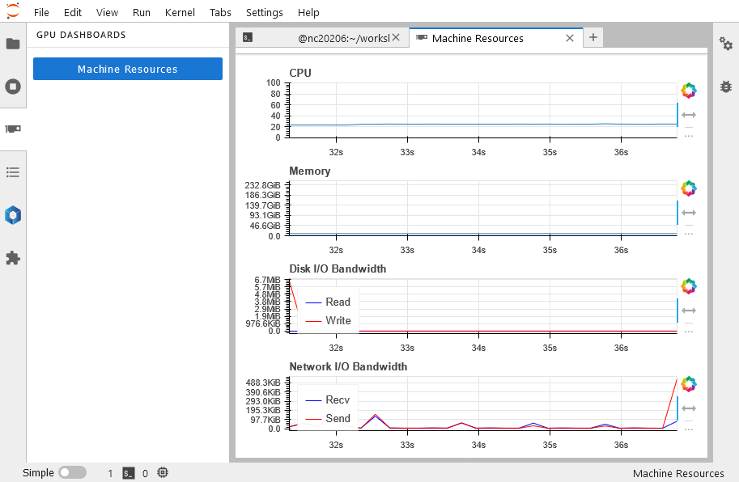
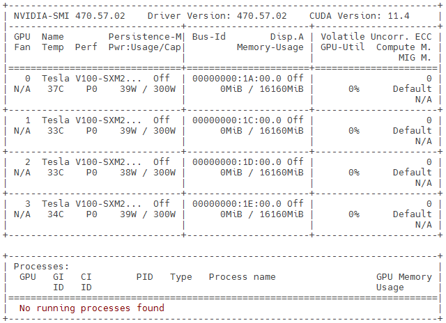
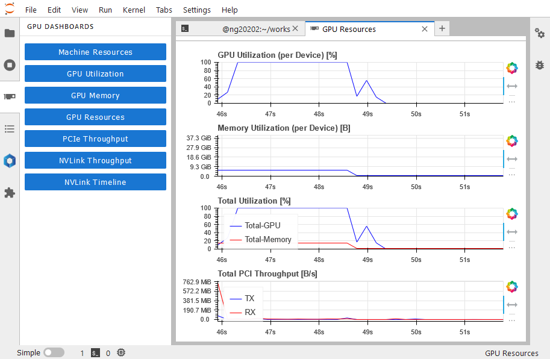
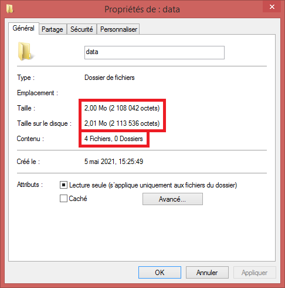

Use Resources Wisely#
With a Digital Research Alliance of Canada account, you have access to many high performance computing resources:
Compute clusters:
Béluga, Cedar, Graham, Narval, Niagara
Storage :
Temporary, project, nearline
While being large, but still limited in size, these resources should be used carefully by everyone in order to maximise the amount of produced scientific results for themselves and for others.
Goal - Writing a Proper Job Script for Slurm#
The main goal of this chapter is to teach you how to analyze your compute tasks in order to determine the required resources to run tasks on compute clusters. Each compute task will eventually be defined in a job script to be submitted to the Slurm scheduler. Typically written in Bash commands, job scripts have:
A shebang at the first line. For example:
#!/bin/bashA header of
#SBATCHoptions for the job’s requirements. These options will be parsed at submission time by thesbatchcommandModules loaded before running the compute task
The Bash commands that will be executed automatically on the reserved resources for the job
For example : scripts/mpi-hello.sh
cat scripts/mpi-hello.sh
#!/bin/bash
#SBATCH --ntasks=10
#SBATCH --mem-per-cpu=1000M
#SBATCH --time=0-00:10
module load StdEnv/2023 gcc/12.3 openmpi/4.1.5
mpirun printenv HOSTNAME OMPI_COMM_WORLD_RANK OMPI_COMM_WORLD_SIZE
Our documentation about job scripts starts at this page: Running jobs
Analysing Compute Jobs on Your Computer#
While a compute task is running on your computer, you can monitor different metrics:
CPU usage (and GPU usage, if applicable)
Memory usage
Storage access (IOPS, bandwidth)
In Windows#
You can find it in two ways:
Look for Task Manager in the Start menu, or
With the keyboard shortcut Ctrl+Alt+Delete
 Image from Wikimedia
Image from Wikimedia
In macOS#
To open the Activity Monitor:
Start it from the Applications and Utilities directory in macOS
Otherwise, use the Command+Space shortcut and start typing the first letters of “Activity Monitor” to find and select it
 Image from Apple Support
Image from Apple Support
In Linux#
In a Linux terminal, you can use:
The
topcommand (Press Q to quit)

The
htopcommand (Press Q to quit)

Analysing Compute Jobs on Clusters#
As a first step, we need to connect to the cluster:
ssh login1
...
Notes :
To connect to the national systems in production, you better use a pair of SSH keys
Multifactor authentication is now available on national clusters. See the introductory video here
With your default access, you can use at least one
def-*account, which allows you to submit compute jobs
To submit a job script, we use the
sbatch command :
sbatch scripts/blastn-gen-seq.sh
And to monitor the status of a job, we use the
squeue command :
squeue -u $USER # or 'sq'
Resources Used by a Completed Job#
With the sacct command,
we can get a detailed table of completed jobs since midnight:
sacct
With the seff command,
we can get a short report about a single completed job.
This report includes the elapsed time, the total
CPU time and the maximum amount of memory used.
Two values of efficiency are given in percentages of total CPU
usage and maximum memory usage (compared to requested amounts).
seff <Job_ID>
Resources Used by a Running Job#
Given some operations on a 3D matrix in the Python script
scripts/crunch.py :
cat scripts/crunch.py
While an interactive job is running, we can use the top
and htop commands to monitor resources being used:
# Interactive job
salloc --cpus-per-task=4 --mem=8000M --time=0:15:0
cat scripts/crunch.sh
# Run with one CPU core
bash scripts/crunch.sh --cpu 1
top -u $USER # Press Q to quit
# Run with four CPU cores
bash scripts/crunch.sh --cpu 4
htop -u $USER # Press Q to quit
# Compare results
grep sec *.log
exit # To go back to login1
If you use JupyterHub to profile your codes, you can visualize in real time the use of the Machine Resources in the tab GPU Dashboards:

Exercise - Checking Resources Used by a Running Job#
While your job is running, you are allowed to connect by SSH to the corresponding compute node in order to monitor your processes:
cat scripts/inv-mat.sh
sbatch scripts/inv-mat.sh
Here are some general steps for job monitoring and validation:
Identify on which node your job is running:
squeue -u $USERConnect to that node with:
ssh <node_name>Monitor the job execution with
toporhtop:Are your processes running at near 100%??
Are your parallel processes running at near \(n\) * 100%, where \(n\) is the number of reserved CPU cores for the job?
Does the compute node seem fully utilized?
Inspect results in
time_inv.csvIdentify any problem. If any, find the cause
Correct the code, the compilation, the script or the parameters used for the compute task
Resubmit the compute job and redo the above validation steps
(Demo) Checking Resources Used by a Running GPU Job#
# Interactive job
salloc --cpus-per-task=4 --mem=8000M --time=0:15:0 --gres=gpu:1
For Windows and macOS, you can install proprietary software that allows real time visualization of the GPU utilization. Please check the documentation of the GPU manufacturer for details
In Linux, with an NVIDIA GPU, we first have the
nvidia-smicommand
nvidia-smi

There is also the
nvtopproject that allows visualizing the use of one or many GPUs in a terminal:
# Run with one GPU
bash scripts/crunch.sh --gpu
nvtop # Press Q to quit

# Check the result
grep sec tg.log
exit # To go back to login1
If you use JupyterHub to profile your GPU software or code, you can visualize in real time the use of GPU Resources in the tab GPU Dashboards:

Exercise - Testing crunch.py with One GPU#
cat scripts/crunch-sbatch-1gpu.sh
sbatch scripts/crunch-sbatch-1gpu.sh
squeue -u $USER # To check the status of the job
tail -24 $(ls slurm-* | tail -1)
Comparing the Speed of CPU Cores and a GPU#
Before using GPUs on compute clusters, your application and its main algorithm must at first demonstrate a “good performance” while using regular CPU cores in parallel.
A few definitions:
Elapsed time = total perceived execution time, not the CPU time
Acceleration = (Elapsed time with
1CPU core) / (Elapsed time withNCPU cores)Efficiency = (Acceleration) /
N
The acquisition cost of a GPU node being about five times the cost of a regular CPU node, the use of a single GPU must accelerate an application at least five times (5x) the speed of 8 to 16 cores in parallel to be worth it.
GPU Acceleration = (time with 8 to 16 CPU cores) / (time with a single GPU) >= 5
Jobs Analysis via Cluster Portals#
Béluga and Narval each have a great portal for job monitoring:
Estimating Required Compute Resources#
Target Efficiency of a Job#
When testing with a short and small job, the target for:
The compute efficiency is at least 90%
Serial tasks: may need to optimize the access to the data
Use each type of storage spaces adequately (see chapter 4)
Parallel tasks: there is a maximum number of CPU cores that can reach this target:
Scalability principle and the Amdahl’s law
The memory usage should be around 80% of what was requested to the Slurm scheduler
Reminder - you can get these percentages with the commands
sacct -X (mainly to get job IDs) and seff.
The important values are:
CPU UtilizedandCPU EfficiencyMemory UtilizedandMemory Efficiency
Exercise - Job Efficiency#
For some of your jobs listed by the following command:
sacct -X
Get the CPU Efficiency and the Memory Efficiency with the command:
seff <Job_ID>
Extrapolating Required Compute Resources#
If you increase the size of the problem, what should be the expected compute time and memory usage? A detailed code analysis is not necessary to make that approximation:
You can measure the execution time (with the
timecommand) in function of the size of the problem. By extrapolating the results, you should be able to predict the program behavior on the compute cluster.
time -p sleep 2
You can also considerate the shape of the input data in order to guess the order of the main calculation.
Data Size and Number of Files to Process#
On top of the compute time and memory usage, you must also considerate the storage space usage. Values to take into account are:
The quantity in bytes (or GB)
Can be used to estimate the memory usage
Take into account the size limit of the local storage for optimized file access
The number of files to process
Data parallelism could be a solution
Multiply the average run time needed to process a file by the total number of files to get an approximate job time limit
Multiply the average size of files by their number to estimate the space needed in memory (example: loading images)
Use the local storage to optimize repetitive and random accesses
To get the number of files and the total size:
In Windows: in Windows Explorer (keyboard shorcut: Windows + E)
Select one directory or multiple files
Right-click -> Select Properties

In macOS: with Finder
Select one directory or multiple files
Right-click -> Select Get Info
In Linux and on compute clusters:
The graphical environment can provide similar tools, but it depends on the Linux distribution and the chosen desktop
The command
du -sb DIRECTORY(sfor total sum,bfor apparent size in bytes) recursively computes and displays the total size of used space in bytes. The apparent size is important to considerate while transferring or backuping the dataThe command
find DIRECTORY | wc -lrecursively counts and displays the number of files and subdirectories
du -sb data
find data | wc -l
Comparison of Compute Clusters#
About compute clusters:
Availability |
March 2019 |
June 2017 |
June 2017 |
October 2021 |
April 2018 |
City |
Montréal |
Burnaby |
Waterloo |
Montréal |
Toronto |
Province |
Québec |
B.C. |
Ontario |
Québec |
Ontario |
Number of CPU cores (number of nodes * CPU cores per node) :
AMD/Intel CPU |
|||||
|---|---|---|---|---|---|
Broadwell (avx2) |
724 * 32 |
983 * 32 |
|||
Skylake (avx512) |
802 * 40 |
640 * 48 |
1548 * 40 |
||
Cascade Lake (avx512) |
768 * 48 |
136 * 44 |
476 * 40 |
||
EPYC Rome (avx2) |
1181 * 64 |
Memory per core |
|||||
|---|---|---|---|---|---|
2400M |
160 * 40 |
||||
4000M |
1408 * 48 |
903 * 32 |
1145 * 64 |
||
4000M |
576 * 32 |
||||
4400M |
136 * 44 |
||||
4800M |
589 * 40 |
2024 * 40 |
|||
8000M |
96 * 32 |
56 * 32 |
|||
16000M |
24 * 32 |
24 * 32 |
|||
19200M |
53 * 40 |
||||
32000M |
36 * 64 |
||||
48000M |
24 * 32 |
3 * 64 |
|||
96000M |
4 * 32 |
Number of GPUs per cluster:
GPU Model |
|||||
|---|---|---|---|---|---|
NVIDIA P100 12G |
456 |
320 |
|||
NVIDIA P100 16G |
128 |
||||
NVIDIA T4 16G |
144 |
||||
NVIDIA V100 16G |
688 |
54 |
|||
NVIDIA V100 32G |
768 |
16 |
216 |
||
NVIDIA A100 40G |
636 |
Other specifications :
Fast network |
InfiniBand |
OmniPath |
InfiniBand |
InfiniBand |
InfiniBand |
Topology |
Fat Tree |
Fat Tree |
Fat Tree |
Fat Tree |
DragonFly+ |
Island size (core) |
640-1200 |
1024-1536 |
1024 |
3072-3584 |
17280 |
Blocking factor |
max 5:1 |
max 2:1 |
max 8:1 |
max 4.7:1 |
max 2:1 |
Job granularity (by) |
core, GPU |
core, GPU |
core, GPU |
core, GPU |
node |
Maximum time |
7 days |
28 days |
7 days |
7 days |
1 day |
Storage: all will be described in the last chapter.
Key Points#
Estimate Slurm job parameters
Number of CPU cores and compute nodes
Number of accelerators (GPU)
Memory (RAM)
Compute time (
DD-H:MorH:M:S)
Different tools to monitor used resources
timeand other libraries to measure elapsed timetop,htop,nvtop,nvidia-smisacct,seffdu -sb,find | wc -land other operating system tools
Target efficiency of at least 90% for CPU jobs
The acceleration with a GPU should be significant (>5x)
The choice of a cluster depends on the needs of each type of compute tasks